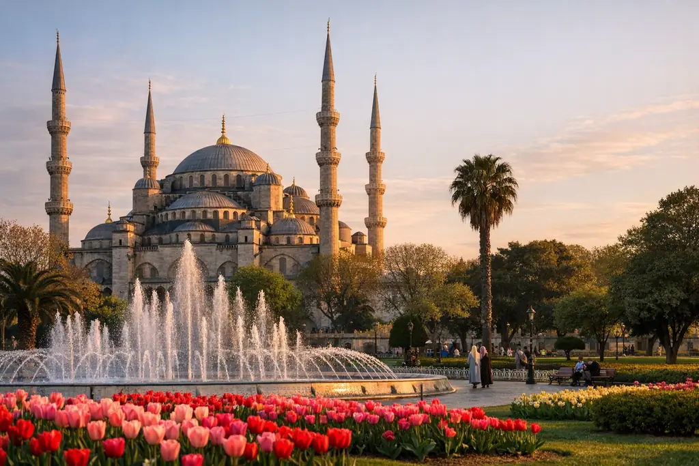

Что посмотреть в Стамбуле за 5 дней? Гид по планированию
Практический план на пять дней в Стамбуле, который сочетает исторические достопримечательности, Босфор и однодневную поездку в Бурсу или Сапанджу, с советами, где остановиться, и подсказками, как сэкономить время и силы.